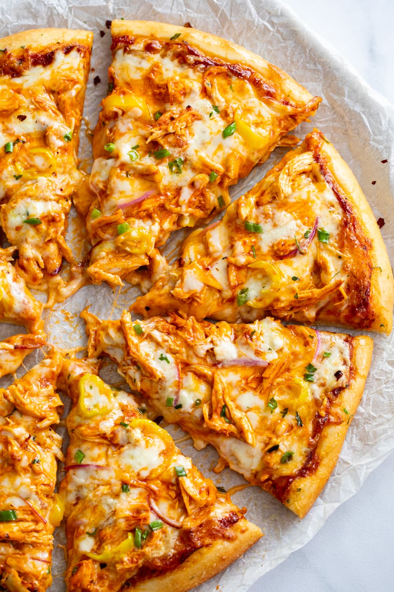

Buffalo Chicken Pizza

Description
Buffalo Chicken Pizza is a favorite of mine, and a great meal to eat whenever you have the time
during the week. This recipe has the best balance of buffalo sauce, cool and blue cheese, and even a few
add-ons like red onions, banana peppers and green onions.
Ingredients
- Green Onions
- Banana Peppers
- Mozzarella
- Buffalo Sauce
- Blue Cheese
- Red Onions
- Pizza Dough
- Pizza Sauce
- Butter
- Parsley
- Pepper Flakes
- Parmesan
- Shredded Chicken
Steps
- Preheat oven to 450° F. Note: If you have a pizza stone, put it in the oven while it preheats for more even cooking and a browner, crisper crust.
- Combine the shredded chicken, buffalo sauce, and 1 tablespoon of blue cheese. Let the chicken marinate while you prepare the remaining ingredients.
- Spread the dough onto a lightly greased, 12-inch pizza pan (or stone). holes in it with a fork to prevent the crust from bubbling up in the oven.
- Top with pizza sauce, then with most of the mozzarella. Add the chicken, onions, and banana peppers, then the remaining mozzarella.
- Drizzle with 3 tablespoons of blue cheese, along with 1-2 tablespoons of buffalo sauce.
- Bake for 13 minutes and remove from the oven.
- Combine the melted butter, Parmesan cheese, and garlic powder. Brush it over the crust of the pizza and return it to the oven.
- Bake for 2-3 more minutes, or until the crust begins to brown.
- Garnish with green onions, red pepper flakes, and parsley. Slice and serve!
Home